← Articles · Turbidity article
CLARITAS
A GPU Accelerated Particle Size Resolved Monte Carlo Model for Optical Transport in Sediment Laden Water
Technical article • Current implementation
Abstract
CLARITAS models optical transport through sediment-bearing water using particle-size-resolved Monte Carlo ray histories in an explicit sample-cell geometry. Discrete loess and kaolin particle populations retain their own number densities, refractive indices, Lorenz–Mie efficiencies and angular distributions. A hybrid event model partitions the exact Mie scattering proposal rate between finite-particle rough-interface interactions and a wave contribution, which itself separates coherent Mie deflections from morphology-based direction changes. The suspension is represented by a stationary, axisymmetric sediment field that balances gravitational settling, centrifugal drift and effective diffusion; the supplied configuration also includes prescribed meridional circulation. A curved free surface, acrylic boundaries, source collimation and detector apertures participate directly in the ray transport. CUDA kernels prepare the particle tables and sediment field, trace independent histories and accumulate detector and spatial diagnostics. This article explains the physical assumptions, rate partition, numerical sampling and interpretation of outputs as one integrated forward model. Available experimental comparisons support aspects of angular shape on trusted channels, but do not establish absolute voltage prediction or validate the changed geometry and circulation settings. Spectral material data, local suspension measurements and calibrated apparatus backgrounds remain important constraints on predictive use.
1 Introduction
Optical measurements of suspended sediment depend on much more than the total mass of solids in a sample. Particles of different diameters contribute different projected areas per unit mass, different electromagnetic scattering efficiencies and different angular redistribution. A suspension containing a small mass of fine particles may contain far more individual particles than a suspension whose mass lies mainly in coarse grains. Natural materials also combine mineralogical variation, surface roughness and departures from spherical shape. Consequently, two samples at the same mass concentration can produce different detector signals even before the geometry of the instrument is considered.
The measurement geometry adds another layer of dependence. A detector observes rays admitted by a finite aperture after propagation through water, acrylic and air. A ray may arrive after one particle encounter, several particle encounters or a sequence of particle and apparatus reflections. The detector angle therefore identifies a physical location and viewing geometry; it is not automatically the deflection angle at the last scattering event. Strong forward scattering can preserve a narrow transmitted component while repeated encounters populate large-angle channels. The relative contributions change with concentration and with the particle-size distribution, abbreviated PSD throughout this article.
Sediment need not occupy the sample uniformly. Coarse particles settle more rapidly, mixing redistributes them, and rotational flow produces radial particle slip. An optical path can therefore sample a local PSD different from the nominal material PSD. The distinction matters especially when detectors lie at one fixed height. Increasing the total sediment mass does not by itself establish the size composition seen at that plane. A forward model intended to investigate these effects must describe both particle optics and the stationary spatial state of the suspension.
Beer–Lambert attenuation remains useful for direct transmission in a suitable regime. A bulk radiative-transfer model with one scattering coefficient and one effective phase function can also be appropriate when the material and spatial averaging are justified. CLARITAS addresses questions that require more explicit information: which size bins contribute to encounters, how finite particles redirect rays, how apparatus boundaries alter accepted paths, and how size segregation changes the local optical environment. Its purpose is to retain these dependencies while making the computational cost manageable through GPU execution.
The model is a forward calculation. Given material, concentration, wavelength, geometry and prescribed transport parameters, it predicts detector scores and diagnostics. It does not presently infer an unknown PSD and concentration from measured voltages. The physical scope is a dilute suspension with independent optical proposals and a prescribed fluid state. The methods draw on Lorenz–Mie theory [1], geometrical interface optics [2], stochastic radiative transport [8] and rough-interface microsurface models [5–7]. Their combination is a modelling construction whose assumptions must be assessed separately from the correctness of each constituent algorithm.
2 An integrated physical and computational model
The calculation begins with a physical configuration, not with a fitted detector curve. Material and concentration establish the population assigned to discrete particle-size bins. Optical constants and wavelength determine each bin’s Mie properties. Cell dimensions and the selected free surface define the accessible water volume. The sediment closure then distributes each bin through that volume while preserving its prescribed inventory. These preparations provide the local hazards used by the ray-history kernel.
Figure 1 separates these preparations from the Monte Carlo histories. Optical preprocessing calculates deterministic tables rather than repeatedly solving a scattering problem at every event. Sediment preparation likewise computes a stationary field once for the configured flow and diffusivity. A history then consults these tables at its current position, samples a candidate interaction distance, compares that distance with the nearest apparatus boundary and executes the relevant physical branch. Detector scoring occurs after the appropriate exit and collimator geometry has been followed.
Several quantities that appear similar have different roles. The physical projected-area coefficient measures the total geometric cross-sectional area per unit sample volume. The Mie scattering coefficient measures the sum of electromagnetic scattering cross sections. The geometric transport channel is the part of the hybrid proposal rate assigned to finite-particle tracing; it need not equal the projected-area coefficient. Similarly, a reporting-average phase function is a diagnostic summary, whereas the coherent transport sampler selects a phase CDF belonging to one actual PSD bin. Maintaining these distinctions is essential to understanding the implementation.
The present description uses the active CLARITAS.py in the supplied archive as its authority. The principal current settings are a 98 mm internal bore and a stationary meridional advection–diffusion sediment model with nonzero circulation. The accompanying article contains useful examples from a different apparatus and stationary-flow configuration. Those examples are identified as supplied evidence rather than relabelled as outputs of the current configuration. No new production detector sweep is claimed here.
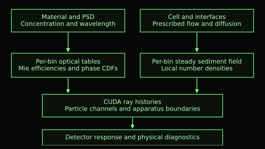

3 Sample cell source and detector geometry
The water occupies a cylindrical bore surrounded by an acrylic wall. The current internal radius is 49 mm, the wall thickness is 3.5 mm and the cylinder extends 491 mm above the internal bottom. The configured mean water depth is 142 mm. An acrylic bottom disc is 3 mm thick. These dimensions define distinct surfaces rather than a single absorbing enclosure: a ray can reflect or transmit at water–acrylic, acrylic–air and water–air boundaries and may return to water after travelling through acrylic or headspace.
Physical heights in the user configuration are measured upward from the internal bottom. The transport kernel instead places the detector plane at z = 0, so the bottom lies at z = −0.093 m and the configured mean free-surface height is z = 0.049 m. Cartesian x and y span the horizontal detector plane, with r = sqrt(x² + y²) used by the axisymmetric sediment and vortex model. Figure 2 shows the relationship between the side section and the detector-plane view. The side sketch concentrates on the wetted region; the full wall height is given in Table 1.
The current source is lateral. It launches near the outer sensor ring on the negative y side and points nominally in the positive y direction through the bore at detector height. It is therefore not an upward beam entering through the base. The emitting spot is a narrow Gaussian with a 10 µm standard-deviation parameter. Its production angular model treats a beta law as radiance and includes the solid-angle Jacobian when sampling polar directions. A uniform azimuth generates a three-dimensional source cone. Source collimation removes rays that fail the stepped aperture geometry before they enter the cell.
The sensor ring lies 93 mm above the bottom. Its inner radius follows the acrylic outer radius plus 0.5 mm clearance; its radial width is 15 mm. Source and detector apertures contain an 8.7 mm counterbore and a 4 mm through-bore, with an 8 mm counterbore depth. Under current absorbing-bore settings, acceptance follows intersection with these mechanical openings. The retained 6.5° legacy acceptance parameter belongs to a comparison scoring path and should not be treated as the complete production acceptance law.
There are eighteen detector channels from 0° to 170° in 10° increments, with the source located at 180°. The 0° detector faces the source across the cell. Large channel angles describe detector positions approaching the source side. Calling such measurements backscatter is an apparatus convention; it does not imply that every contributing ray made one reversal at one particle. The trace records enough interaction information to examine this distinction directly.
The curved free surface is part of the optical geometry. A ray directed upward meets the local surface height and normal, not the mean water-height plane. The apparatus routines also distinguish submerged wall, headspace and base topology. Changes in water depth or vortex depression can thus alter detected paths even if the optical properties of every sediment bin remain fixed.
| Quantity | Value | Meaning |
|---|---|---|
| Internal water diameter | 98 mm | Bore diameter |
| Acrylic wall and bottom | 3.5 mm and 3 mm | Distinct refracting boundaries |
| Wall height and mean water depth | 491 mm and 142 mm | Measured from internal bottom |
| Sensor height | 93 mm | Physical detector plane |
| Ring inner and outer radii | 53 mm and 68 mm | Derived from bore and clearances |
| Through bore and counterbore | 4 mm and 8.7 mm | Mechanical collimation |
| Water acrylic air indices | 1.33 1.4906 1.0 | Fixed spectral assumptions |
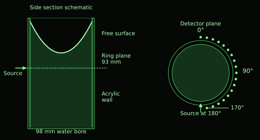

4 Sediment populations and optical constants
Loess is represented by 38 discrete diameters spanning 1.729–262.376 µm; kaolin uses 37 bins spanning 0.172–22.797 µm. Each diameter is an equivalent spherical diameter. The supplied weights are normalized to unit total mass fraction in the active mass-fraction mode. They are amounts assigned to discrete bins rather than a probability density per unit diameter. This distinction is important when a PSD is plotted against a logarithmic diameter axis: the plotted ordinate is mass fraction per bin, not a density whose integral over the displayed axis automatically equals one.
For a particle density rho_p and bin diameter d_i, the volume is πd_i³/6. Multiplication by density gives the mass of one represented particle. If the nominal sediment mass concentration is C and the mass fraction in bin i is f_i, then Cf_i is the mass of that bin per unit sample volume. Dividing by the individual particle mass gives its mean number density. In SI units, 1 g L⁻¹ equals 1 kg m⁻³, so the numerical concentrations 0.5, 2 and 4 retain their values when converted to kg m⁻³.
Equation 1 LaTeX source
m_i=\frac{\rho_p\pi d_i^3}{6}
Equation 2 LaTeX source
\bar n_i=\frac{C f_i}{m_i},\qquad p_{\mathrm{number},i}=\frac{\bar n_i}{\sum_j\bar n_j}The particle mass m_i is in kilograms and the nominal mean number density nbar_i is in m⁻³. The normalized number fractions p_number,i are useful diagnostics but are not generally the probabilities for selecting an optical event. Event probabilities additionally contain the relevant optical cross section and, in a nonuniform suspension, the bin’s local density factor. Mass weighting, number weighting and event weighting answer different questions and should be named explicitly.
For equal particle density, dividing mass by d³ amplifies the importance of fine bins in particle count. Projected area per unit mass scales as 1/d, so even the geometric encounter contribution can be sensitive to fine material. Electromagnetic efficiency complicates this simple area argument: an extremely small particle need not scatter with the same efficiency as a much larger one. CLARITAS preserves the per-bin efficiencies and therefore does not equate particle count or total area with the final detector response.
Figure 3 replots the exact embedded diameter and mass-weight arrays. It is a source-data illustration, not a new Monte Carlo output. Loess places substantial mass at much larger diameters than kaolin, while kaolin includes a fine population absent from the loess table. These differences influence settling, local segregation and optical size parameter simultaneously. The adopted common particle density is 2600 kg m⁻³; mineral-specific density distributions are not inferred from the PSD.
The complex particle refractive index is written m_p = n_p + i k_p. The real part controls refractive contrast and the imaginary part controls loss. CLARITAS stores a separate real index for each diameter bin. The loess profile decreases approximately from 1.60745 to 1.55563 across its size range; the kaolin profile decreases from 1.585 to 1.56. These profiles are exploratory effective-material assumptions, not measured optical constants for these particular samples. They permit size-dependent composition to be investigated but do not establish the true mineral mixture.
Although nonzero imaginary-index profiles are embedded in the source, the active standalone override sets k_p = 0 for both materials. The distinction between available data arrays and active configuration matters: using the embedded nonzero arrays without accounting for the override would describe an absorbing production suspension that is not actually selected. User-supplied constants can activate absorption, but the baseline here retains particle scattering and interface reflection without material absorption.
Size dependence is separate from wavelength dependence. A table n_p(d) assigns different values to different particles at one assumed optical basis. It is not a spectral dispersion model n_p(d,lambda). Changing the wavelength recomputes Mie quantities with the supplied constants; it does not automatically measure or extrapolate the spectral index of loess, kaolin, water or acrylic. This is a central limitation when interpreting a multi-wavelength study.
| Property | Loess | Kaolin |
|---|---|---|
| Discrete PSD bins | 38 | 37 |
| Diameter range | 1.729–262.376 µm | 0.172–22.797 µm |
| Real particle index range | 1.60745–1.55563 | 1.585–1.56 |
| Active imaginary index | 0 | 0 |
| Particle density | 2600 kg m⁻³ | 2600 kg m⁻³ |
| Weight convention | Normalized mass per bin | Normalized mass per bin |
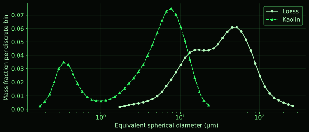

5 Lorenz Mie properties and size specific sampling
Lorenz–Mie theory solves electromagnetic scattering by a homogeneous sphere in a homogeneous surrounding medium [1]. CLARITAS uses the vacuum wavelength lambda_0 and surrounding water index n_m to define the size parameter x. The relative complex index used in the coefficient calculation is m_rel = (n_p + i k_p)/n_m. The surrounding-medium wavelength is lambda_0/n_m, which explains why the water index appears in x even when the wavelength input is given in nanometres in air or vacuum.
Equation 3 LaTeX source
x_i=\frac{\pi n_m d_i}{\lambda_0},\qquad m_{\mathrm{rel},i}=\frac{n_{p,i}+\mathrm{i}k_{p,i}}{n_m}The electric and magnetic multipole coefficients a_l and b_l describe the response of each order l. They are calculated by a downward recurrence for logarithmic derivatives followed by Riccati–Bessel recurrences. The implementation truncates the series using an order estimate based on x + 4 x^(1/3) + 2, with additional recurrence depth based on the magnitude of m_rel x. Arrays have a finite maximum supported order, so sufficiently large diameter or short wavelength can exceed numerical support rather than being silently accepted.
The coefficients determine dimensionless scattering and extinction efficiencies. Absorption efficiency is their difference. The backscattering efficiency uses the alternating multipole sum, while the asymmetry parameter g is the mean cosine of the scattering angle. These quantities distinguish total redistributed power, total removal from an incident coherent beam, irreversible loss, and angular bias. In particular, Q_back is a single-particle electromagnetic quantity; it is not the total score at the apparatus 170° detector.
Equation 4 LaTeX source
Q_{\mathrm{sca}}=\frac{2}{x^2}\sum_l(2l+1)(|a_l|^2+|b_l|^2)
Equation 5 LaTeX source
Q_{\mathrm{ext}}=\frac{2}{x^2}\sum_l(2l+1)\operatorname{Re}(a_l+b_l),\quad Q_{\mathrm{abs}}=Q_{\mathrm{ext}}-Q_{\mathrm{sca}}
Equation 6 LaTeX source
Q_{\mathrm{back}}=\frac{|\sum_l(2l+1)(-1)^l(a_l-b_l)|^2}{x^2}
Equation 7 LaTeX source
\sigma_{q,i}=Q_{q,i}\frac{\pi d_i^2}{4},\qquad g_i=\langle\cos\theta\rangle_iThe symbol q identifies scattering, extinction, absorption or backscatter. Multiplying an efficiency by projected sphere area gives a cross section in m². An efficiency can exceed one because it compares an electromagnetic cross section with geometric projected area; it is not a probability that must lie between zero and one. The single-particle scattering albedo is Q_sca/Q_ext where extinction is positive. Under the selected k = 0 conditions, scattering and extinction should agree within numerical accuracy.
The angular amplitudes S1 and S2 are evaluated separately for every diameter and optical-index pair. For unpolarized incident light, their squared magnitudes define an intensity proportional to (|S1|² + |S2|²)/2. This intensity is per solid angle. Sampling a polar angle requires multiplication by sin theta, because a ring of directions near the equator spans more solid angle than a ring with the same polar width near an axis. Missing this factor would bias the angular law even if the Mie amplitudes were calculated correctly.
Equation 8 LaTeX source
p_i(\theta)=\frac{I_i(\theta)\sin\theta}{\int_0^\pi I_i(t)\sin t\,dt}
Equation 9 LaTeX source
F_i(\theta)=\int_0^\theta p_i(t)\,dt,\qquad\theta=F_i^{-1}(U)Here U is a uniform random variate and F_i is the normalized cumulative distribution function, or CDF. The production angular table contains 2049 theta points with enhanced endpoint resolution. Trapezoidal integration constructs the per-bin CDF, and a binary search followed by interpolation locates the sampled angle. The scattering azimuth is sampled uniformly around the incident direction before the ray is rotated in three dimensions.
The GPU functions mie_coefficients_efficiencies_kernel, mie_phase_pdf_kernel and mie_phase_cdf_kernel perform the deterministic preprocessing. The device functions sample_mie_theta and mie_scatter_direction use the chosen bin’s table. Figure 4 summarizes this conditional sampling sequence. The table index pidx is selected using the event branch’s local bin hazards; phase_cdf[pidx, :] is then the applicable angular distribution. CLARITAS therefore does not collapse all sizes into one production PSD-averaged phase function.
A mean phase curve remains useful for reporting. The function _phase_function_outputs forms a weighted mean of the per-bin CDFs, normally using wave-event weights, and differentiates it to obtain a diagnostic PDF. This describes the chosen reporting mixture. It is not substituted into mie_scatter_direction, and it does not incorporate all finite-particle or morphology outcomes. A detector curve can differ substantially from this average because detector acceptance, repeated encounters and apparatus reflections act after the initial angular redistribution.
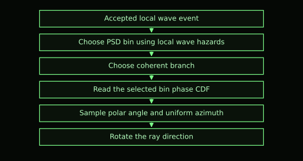

6 The hybrid finite particle and wave event model
The selected event model is hybrid_mie_exact_rate. Its defining constraint concerns the proposal rate: the total binwise rate equals number density times the exact Mie scattering cross section. The model partitions that rate into a finite-particle geometric channel and a residual wave channel. Let A_i = πd_i²/4 and S_i = sigma_sca,i. The geometric channel receives min(S_i,A_i), and the wave channel receives max(S_i−A_i,0). Their sum is S_i for every bin, including bins whose scattering efficiency is below one.
Equation 10 LaTeX source
\sigma_{\mathrm{geom,trace},i}=\min(S_i,A_i),\quad\sigma_{\mathrm{wave},i}=\max(S_i-A_i,0)
Equation 11 LaTeX source
\sigma_{\mathrm{event},i}=\sigma_{\mathrm{geom,trace},i}+\sigma_{\mathrm{wave},i}=S_iThis partition prevents the geometric projected area from exceeding the chosen total scattering proposal rate when Q_sca < 1. It also avoids assigning both a full geometric rate and a full Mie rate to the same population. The stored physical geometric coefficient still uses A_i for projected-area diagnostics. The transport_precompute_kernel maintains both quantities because total cross-sectional area and the geometric tracing hazard are not interchangeable.
The word exact in the model name does not mean the complete hybrid angular distribution is the exact Mie solution. The finite-particle channel follows refracted and reflected paths through a rough dielectric particle. The wave channel may use coherent Mie scattering or a direction-only morphology interaction. The rate is constrained by Mie theory, whereas the angular outcome is an explicit hybrid assumption. Matching the proposal rate is therefore a meaningful but narrower property than reproducing every electromagnetic feature of a sphere.
At an accepted event, the kernel calculates local geometric and wave hazards, chooses the channel in proportion to those hazards, then selects a PSD bin within that channel. The finite geometric proposal samples an impact parameter uniformly over projected area: a normalized radial parameter is sqrt(U), with uniform azimuth. The sampled geometry determines an actual sphere centre and entry normal. This is not a precomputed cloud of permanently positioned particles; particles are constructed conditionally for the encounter in a stochastic population description.
Accessibility is checked using the actual sampled centre and finite radius. A sphere must fit within the water bore, above the bottom and below a conservative free-surface support. Inaccessible proposals become null encounters rather than being resampled until a particle fits. This preserves the underlying proposal construction and imposes a boundary-dependent exclusion of finite particles. Consequently, the exact bulk proposal rate should not be confused with the frequency of successful finite-particle interactions arbitrarily close to an apparatus boundary.
Once accessible, the geometric sphere is traced explicitly. An entry surface interaction may reflect the ray back into water or transmit it into the particle. An internal direction determines the next intersection with the finite sphere. Reflection may create another internal chord; transmission produces an exit to water. The sphere_fresnel_interaction_3d_sampled_ex routine updates both position and direction. Internal absorption can terminate the history if nonzero k is selected. Figure 5 illustrates one possible multi-segment path rather than a universal trajectory.
The residual wave channel has a coherence fraction determined by the configured surface-height parameter sigma_h. The supplied sigma_h = 100 nm strongly suppresses its coherent portion at 622 nm in water. Using the source formula gives a coherent fraction of approximately 7.3 × 10⁻⁴. Thus the coherent Mie tables remain part of the production model, but most wave-channel outcomes under these settings use the rough-interface morphology branch. This is a major practical distinction from a model that samples a Mie angle at every encounter.
Equation 12 LaTeX source
f_{\mathrm{coherent}}=\exp\left[-\left(\frac{4\pi n_m\sigma_h}{\lambda_0}\right)^2\right]The morphology branch uses a volume-preserving spheroid construction and a rough dielectric walk to obtain a direction change. The supplied production aspect ratio is 1, so the configured shape is spherical even though the routine supports spheroids. This branch does not translate the world-space ray through a resolved particle as the geometric channel does. Internal-path diagnostics can still describe its local optical construction, but they should not be mistaken for displacement of the transport site.
The selected rate model does not activate the separate moment-constrained option available in the source. No claim that the hybrid mixture enforces the exact Mie asymmetry or second angular moment should therefore be made for the present configuration. The architecture instead makes its geometric, coherent and morphology contributions explicit and records their counts. These diagnostics allow the detected response to be connected to mechanisms without converting mechanism fractions into fitted gain factors.
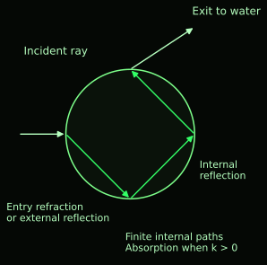

7 Fresnel optics rough surfaces and absorption
For a smooth dielectric interface, Snell’s law relates the incident and transmitted directions through the real refractive indices n1 and n2 [2]. With theta1 measured from the incident-side normal, the transmitted angle exists only when the corresponding sine lies within the physical interval. A ray passing from a larger to a smaller real index can undergo total internal reflection when its incident angle exceeds the critical value. This condition appears both in particle escape and in apparatus transport.
Equation 13 LaTeX source
n_1\sin\theta_1=n_2\sin\theta_2,\quad\theta_c=\arcsin(n_2/n_1)\quad(n_1>n_2)
Equation 14 LaTeX source
R_s=\left(\frac{n_1\cos\theta_1-n_2\cos\theta_2}{n_1\cos\theta_1+n_2\cos\theta_2}\right)^2
Equation 15 LaTeX source
R_p=\left(\frac{n_2\cos\theta_1-n_1\cos\theta_2}{n_2\cos\theta_1+n_1\cos\theta_2}\right)^2,\quad R=\frac{R_s+R_p}{2}The scalar Fresnel reflectance R is the unpolarized average of the two polarization reflectances. A uniform random draw selects reflection with probability R; otherwise transmission follows the refracted direction when it exists. At a lossless interface, this branch sampling represents the redistribution of ray power statistically. The current trace does not propagate a full Stokes polarization vector or phase coherence between separate histories. Coherent in the wave-channel terminology refers to the selected single-particle angular contribution, not a global interference calculation through the apparatus.
Particle surfaces use a statistical microsurface model rather than simply adding a random angular perturbation to a smooth-sphere result. The nominal sphere supplies a macroscopic normal, while a Beckmann distribution describes local facet slopes [5]. In its isotropic form, the normal distribution D depends on the angle theta_h between facet normal and nominal normal and on a roughness slope parameter alpha. The configured RMS slope angle is converted to the implementation’s Beckmann alpha; the default is 25°, giving alpha = tan(25°) ≈ 0.466. A roughness slope and a wave surface-height parameter are distinct inputs with distinct roles.
Equation 16 LaTeX source
D(\theta_h)=\frac{\exp[-\tan^2\theta_h/\alpha^2]}{\pi\alpha^2\cos^4\theta_h}A distribution of normals alone is insufficient. Facets can be hidden from an incoming or outgoing direction, and a ray can encounter several facets before escaping the statistical rough interface. Smith masking and shadowing supply this visibility structure [6,7]. For an outward direction, the standard integrated Smith factor is G1 = 1/(1+Lambda); CLARITAS also uses signed full-incidence and height-conditioned forms inside the dielectric walk. The implementation samples visible normals and stochastic microsurface free paths rather than accepting every facet drawn from an unconditional normal distribution.
Equation 17 LaTeX source
G_1(\mathbf w)=\frac{1}{1+\Lambda(\mathbf w)}The smith_microsurface_dielectric_walk_ex function combines the visible Beckmann normal sampler, Smith height/free-path sampling, Fresnel branch selection and repeated local interactions. Reflection and transmission can occur several times within this local walk before it returns an outgoing side and direction. Finite-particle transport then uses that result at the nominal sphere surface. The two levels of repetition must be distinguished: several microsurface interactions can occur during one macroscopic boundary visit, and several macroscopic visits can occur along successive internal sphere chords.
This treatment draws on multiple-scattering microfacet theory [7]. It represents unresolved roughness statistically, so it does not reconstruct an actual mineral surface. The chosen roughness is consequently a physical modelling parameter whose independent measurement would improve interpretation. A failure to sample a valid microsurface state is recorded as a numerical failure; the code does not silently replace it with a smooth normal. Such failure accounting protects the meaning of the physical branches but does not itself validate the assumed roughness of natural sediment.
Absorption is different from deflection. For a particle with imaginary index k_p, the intensity attenuation coefficient uses the vacuum wavelength, alpha_abs = 4πk_p/lambda_0. Transmission over an internal path L is exp(−alpha_abs L). Longer internal residence can therefore increase absorption even when two paths leave in similar directions. The finite-particle routines apply this internal attenuation stochastically, consistent with their survival/termination description.
Equation 18 LaTeX source
\alpha_{\mathrm{abs}}=\frac{4\pi k_p}{\lambda_0},\quad T_{\mathrm{internal}}(L)=\exp(-\alpha_{\mathrm{abs}}L)Under the active k_p = 0 override, particle internal attenuation vanishes. Scattering remains active, and a ray can still be lost from detector acceptance through geometry or apparatus escape. Extinction of a coherent incident beam includes redistribution out of that beam and is therefore not synonymous with absorption. Moreover, the selected event model uses Q_sca for its proposal rate even when optical constants are changed. An absorbing variant must be assessed as this hybrid rate construction with internal losses, rather than being assumed equivalent to conventional extinction-rate sampling with a separate albedo decision.
8 Stationary sediment transport and its analytic balance
CLARITAS uses a steady sediment state: partial n_i/partial t = 0. Settling, drift and diffusion remain present in that state, but their divergence balances. The relevant field is PSD resolved, so a concentration description is effectively C(r,z,d), rather than only C(z). Each bin’s local number density n_i contributes to total mass concentration through its individual particle mass. Different bins may have very different stationary shapes despite sharing the same water flow and eddy diffusivity.
A suitable continuum statement is conservation of particle number for each bin. With fluid velocity u, outward radial slip w_r,i, downward settling speed w_s,i and diffusivity D_t, the flux contains advection/drift and a diffusive contribution [11]. Zero normal flux is imposed at the enclosing water boundaries. This represents suspended inventory retained in the modelled volume; it does not include irreversible deposition onto the base or removal at the free surface. The model’s stationary solution is thus an equilibrium or recirculating suspension under the specified closure.
Equation 19 LaTeX source
\mathbf J_i=n_i(\mathbf u+w_{r,i}\mathbf e_r-w_{s,i}\mathbf e_z)-D_t\nabla n_i,\quad\nabla\cdot\mathbf J_i=0
Equation 20 LaTeX source
\mathbf J_i\cdot\hat{\mathbf n}=0\ \text{on the boundary},\qquad\int_V n_i\,dV=\bar n_i VThe second equation fixes each bin’s inventory. It is stronger than conserving only the total sediment mass: coarse and fine fractions cannot exchange inventory merely because their spatial distributions differ. Local mass concentration is C_local = Σ_i m_i n_i. Its volume mean returns the prescribed C, subject to the relevant numerical representation of the water domain. This normalization allows a sediment field to be compared across optical cases without interpreting a local depletion as disappearance of material.
The analytic drift–diffusion branch omits meridional fluid advection. In that case, zero radial and vertical fluxes can be imposed separately. Radial slip produces a radial exponential potential; settling produces a vertical exponential decrease. Let psi_i(r) be an antiderivative of w_r,i/D_t, usually shifted so its wall value is zero for numerical convenience. Let B_i = w_s,i/D_t and z_b be the internal bottom. The stationary number-density field then has a separable exponential numerator but a normalization that depends on the curved water volume.
Equation 21 LaTeX source
n_i(r,z)=\bar n_i\frac{\exp[\psi_i(r)-B_i(z-z_b)]}{N_i},\quad B_i=\frac{w_{s,i}}{D_t}
Equation 22 LaTeX source
N_i=\frac{1}{V}\int_V\exp[\psi_i(r)-B_i(z-z_b)]\,dVThe radial shift cancels through N_i, so it changes numerical conditioning rather than the physical distribution. B_i has units m⁻¹ and controls the vertical inverse length. The normalization integrates over height only up to the local free surface z_s(r), not to a constant rectangular top. A deep centre depression can therefore change both the domain and the inventory factor even before optical paths are traced.
Figure 6 illustrates the simple vertical balance: a larger concentration near the bottom drives upward diffusion while gravity drives downward settling. Both fluxes can be nonzero and equal. With vortex drift, an outward tendency is likewise opposed by diffusion down the radial gradient. The resulting field need not be radially uniform. Larger particles usually respond more strongly because their slip and settling times increase with diameter, although finite-Reynolds-number drag moderates the simplest d² scaling.
The supplied configuration selects the meridional numerical branch instead of this analytic equilibrium. The analytic expression remains important as a supported model, an initializer and a transparent explanation of settling/drift balance. It should not be substituted for the full current field when circulation is nonzero. A recirculating steady solution can have nonzero internal flux while still satisfying zero boundary flux and zero divergence. Stationarity therefore does not imply that J_i vanishes at every point in the current numerical solution.
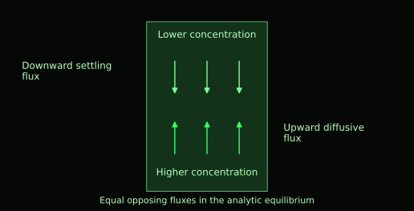

9 Settling centrifugal slip and the prescribed vortex
For a small sphere at low particle Reynolds number, Stokes drag gives a gravitational settling speed proportional to d² and to the density contrast rho_p−rho_f. The fluid viscosity mu is dynamic viscosity. CLARITAS uses rho_f = 997 kg m⁻³, mu = 8.9 × 10⁻⁴ Pa s and g = 9.81 m s⁻². These properties are held fixed unless the user changes them; temperature-dependent water properties are not automatically inferred from wavelength or concentration.
Equation 23 LaTeX source
w_{\mathrm{Stokes},i}=\frac{(\rho_p-\rho_f)g d_i^2}{18\mu},\quad\mathrm{Re}_i=\frac{\rho_f d_i w_i}{\mu}Stokes settling is a limiting law rather than an accurate assumption for every loess bin. The selected transport closure uses the Schiller–Naumann correction [3], expressed as a monotone equation for the slip speed. Newton iteration begins from the Stokes estimate and solves for a smaller speed. The correction tends to unity as Reynolds number tends to zero. It is used for both settling and centrifugal slip, so the larger particles do not retain uncorrected Stokes drift simply because radial and vertical motion have different forcing directions.
Equation 24 LaTeX source
w_i(1+0.15\mathrm{Re}_i^{0.687})=w_{\mathrm{Stokes},i}The ratio w_s,i/D_t defines the vertical inverse length in the analytic field. A useful dimensionless comparison is w_s,i H/D_t across a representative water height H. If this is much less than one, settling creates only a weak gradient under that diffusion closure. If it is appreciable, coarse particles accumulate more strongly near the base. Kaolin’s smaller diameters generally produce weaker segregation than the largest loess bins. This tendency follows from the transport law; its exact magnitude under meridional circulation requires the numerical field.
The vortex is prescribed and steady. CLARITAS does not calculate its formation, stirrer dynamics or time-dependent turbulence. The localized Scully velocity profile [4] uses a core radius a and a core angular-speed parameter Omega_c. Tangential speed increases from zero near the axis, reaches a maximum around r = a and decreases away from the core. The free-surface shape follows the integrated centrifugal head associated with that velocity field.
Equation 25 LaTeX source
v_\theta(r)=\frac{\Omega_c a^2 r}{a^2+r^2}
Equation 26 LaTeX source
z_s(r)=z_{\mathrm{mean}}-\bar h+H_\infty\frac{r^2}{a^2+r^2}
Equation 27 LaTeX source
H_\infty=\Delta h\frac{a^2+R^2}{R^2},\quad\bar h=H_\infty\left[1-\frac{a^2}{R^2}\ln\left(1+\frac{R^2}{a^2}\right)\right]
Equation 28 LaTeX source
\Omega_c=\sqrt{\frac{2gH_\infty}{a^2}}The prescribed Delta_h is the wall-minus-centre free-surface height difference. The quantity h_bar shifts the curve to preserve the configured mean water depth. The code therefore treats the 142 mm water depth as a volume-equivalent mean, not as the centre surface elevation. The selected a = 20 mm and Delta_h = 50 mm determine the flow amplitude without using an optical detector gain as a vortex parameter.
For R = 49 mm, these settings imply a centre surface approximately 110.7 mm above the bottom and a wall surface approximately 160.7 mm above it. The corresponding core angular speed is about 53.49 rad s⁻¹ and the peak tangential speed about 0.535 m s⁻¹. These are derived values of the configured prescription, not measurements of the experimental flow. The sensor plane at 93 mm remains below the centre surface under these settings.
Centrifugal particle slip follows the local acceleration v_theta²/r, with a density-contrast response time tau_i = (rho_p−rho_f)d_i²/(18mu) in the Stokes driving expression. The radial driving speed is tau_i v_theta²/r and is then reduced by the same finite-Reynolds-number correction. It tends smoothly to zero at the axis. The analytic radial potential is obtained by integrating corrected slip divided by D_t; the code uses a radial lookup and quadrature rather than assuming that every finite-Re result retains a closed-form Stokes potential.
Equation 29 LaTeX source
w_{r,\mathrm{Stokes},i}(r)=\tau_i\frac{v_\theta(r)^2}{r},\quad\psi_i(r)-\psi_i(R)=-\int_r^R\frac{w_{r,i}(s)}{D_t}\,dsThe source also supports a parabolic surface associated with rigid-body rotation. The present figures and active configuration use the localized Scully prescription. Both options remain prescribed-flow models. Changing the vortex affects the optical surface, centrifugal drift and, when selected, meridional flow together; it is not merely a graphical modification to the surface plot.
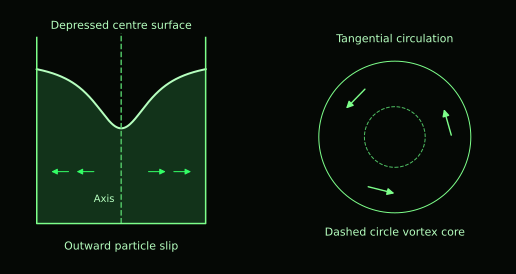

10 The current meridional advection diffusion solution
The active configuration adds a stationary circulation in the r–z plane. Positive circulation produces outward flow near the bottom, upward return near the outer annulus, inward flow near the surface and downward axial return. This pattern can move particles through regions in which settling and centrifugal drift alone would produce a simple exponential equilibrium. It remains a steady prescription: optical rays sample a field that has already been solved, and no sediment time series is advanced while histories are traced.
The continuous meridional field is derived from an axisymmetric streamfunction Psi. Define eta = (z−z_b)/(z_s(r)−z_b) and s = r²/R². The streamfunction vanishes on the axis, wall, bottom and free surface. Its radial and vertical derivatives give an incompressible fluid velocity tangent to these boundaries. The circulation amplitude U_m is tied to the peak vortex tangential speed by a dimensionless ratio chi; the supplied ratio is 0.5, giving U_m about 0.267 m s⁻¹. This amplitude parameter is not necessarily the maximum magnitude attained by every component of the derived field.
Equation 30 LaTeX source
\Psi(r,z)=-2U_m r^2(1-r^2/R^2)^2\eta(1-\eta),\quad U_m=\chi\max(v_\theta)
Equation 31 LaTeX source
u_r=-\frac{1}{r}\frac{\partial\Psi}{\partial z},\qquad u_z=\frac{1}{r}\frac{\partial\Psi}{\partial r}The stationarity equation includes this fluid velocity, the binwise slip and settling, and diffusion. Because the resulting particle velocity is generally not the gradient of a scalar potential, a globally separable exponential concentration is not expected. CLARITAS solves each bin on an axisymmetric finite-volume grid [12]. Annular control-volume weights incorporate radial geometry, and upwind advective face terms are combined with diffusive conductances. A cell-centre mask selects water cells below the curved surface.
The current grid has 48 radial and 96 vertical cells. meridional_build_coefficients_kernel assembles the east, west, north and south coefficients from fluid velocity, slip, settling and D_t. Fluxes crossing unavailable or nonfluid neighbour faces are omitted, implementing the discretized no-flux enclosure. The physical curved boundary is therefore approximated by the active-cell geometry. This numerical representation deserves grid-convergence assessment when surface depression or steep size segregation matters quantitatively.
The solver uses red–black successive over-relaxation, with a configured relaxation factor of 1.75. It periodically renormalizes each bin’s field to its prescribed volume inventory and evaluates a maximum relative equation residual. The configured limit is 8000 iterations, with checks every 250 iterations and a tolerance of 10⁻⁶. A residual criterion addresses satisfaction of the discretized equations; it does not establish convergence with respect to grid spacing or correctness of the turbulence closure.
Positivity is protected within the relaxation procedure by a small floor. The initializer uses the analytic drift–diffusion distribution, providing a sensible nonnegative starting state. The finalized field stores binwise scales sampled by sediment_grid_sample during ray transport and reporting. Nonfluid cells above the top active water cell are extended for interpolation support, while physical ray geometry determines whether a location belongs to water. A plot or local diagnostic must apply the water mask rather than interpret interpolation support as sediment suspended in air.
A stationary numerical solution can transport particles continually around the cell while conserving inventory. The combination of circulation, slip and diffusion can redistribute the sensor-plane PSD in ways that differ from the analytic branch. Accordingly, the supplied older settling profiles are illustrative evidence for the balance mechanism, not a substitute for current meridional outputs. The most useful missing result is a current field accompanied by solver residual and grid-convergence information, so its local optical consequences can be quantified rather than inferred from a schematic.
| Quantity | Selected value | Role |
|---|---|---|
| Eddy diffusivity D_t | 10⁻³ m² s⁻¹ | Effective mixing closure |
| Particle and water densities | 2600 and 997 kg m⁻³ | Slip density contrast |
| Water dynamic viscosity | 8.9 × 10⁻⁴ Pa s | Drag |
| Vortex core radius and depression | 20 mm and 50 mm | Prescribed flow and surface |
| Meridional circulation ratio chi | 0.5 | Sets streamfunction amplitude |
| Meridional grid | 48 × 96 | Stationary numerical field |
| Residual tolerance | 10⁻⁶ | Discrete solver criterion |
11 Local PSD and optical environment
Local segregation is most clearly described through binwise density scales s_i(r,z) = n_i(r,z)/nbar_i. A value above one means enrichment relative to the volume-mean inventory for that bin; a value below one means depletion. Total local concentration sums masses across bins, whereas a local mass-weighted PSD normalizes those contributions at one location. The normalization must be local: simply plotting the original nominal f_i beside a varying total concentration misses the size redistribution.
Equation 32 LaTeX source
C_{\mathrm{local}}(r,z)=\sum_i m_i n_i(r,z),\quad f_{\mathrm{local},i}(r,z)=\frac{m_i n_i(r,z)}{C_{\mathrm{local}}(r,z)}In the dilute one-way closure with aggregation disabled, scaling nominal C scales every nbar_i while leaving the normalized transport shapes s_i unchanged for fixed flow and diffusivity. The optical simulation can nevertheless respond nonlinearly to C because additional encounters, apparatus returns and detector losses change history statistics. Concentration-dependent detector shape therefore does not require a concentration-dependent hydrodynamic field in this particular model. Conversely, real concentration effects on turbulence or aggregation lie outside this simple scaling assumption.
The sensor-ring local PSD is a derived slice through the field at the physical detector height and selected radii. It is not the PSD of particles that actually produced detector hits. The latter is additionally weighted by optical event rates and by the chance that an encounter contributes an accepted detector path. Local composition, collision composition and detected composition are three distinct distributions. CLARITAS provides diagnostics that can expose their differences rather than assuming they coincide.
Local conventional optical coefficients sum the binwise number densities multiplied by the corresponding Mie cross sections. They express the optical environment implied by the PSD field and are valuable for comparing sensor height with the bulk. With nonzero absorption, local albedo is the ratio of scattering to extinction. Under the active lossless-particle constants, these conventional quantities coincide as expected, subject to numerical precision.
Equation 33 LaTeX source
\mu_s(r,z)=\sum_i n_i(r,z)\sigma_{\mathrm{sca},i},\quad\mu_t(r,z)=\sum_i n_i(r,z)\sigma_{\mathrm{ext},i}
Equation 34 LaTeX source
\mu_a(r,z)=\mu_t-\mu_s,\qquad\omega_0(r,z)=\frac{\mu_s}{\mu_t}These conventional coefficients should not hide the channel construction. The actual geometric and wave hazards use their respective partitioned cross sections. In the bulk and away from finite-particle accessibility exclusions, their sum is mu_s for the selected rate model. Near boundaries, a geometrically inaccessible proposal is nullified. Thus a local mu_s plot describes the underlying optical population, while realized finite-particle encounter statistics also include support constraints.
Figure 8 reproduces supplied spatial concentration and local-size output to show why the distinction between bulk and local PSD matters. Its sediment branch does not include the present meridional circulation. The visible concentration field varies over both radius and height, and the local size statistic varies with it. These results demonstrate the information retained by a PSD-resolved field; their numerical values should not be transferred to the current geometry and circulation settings without recomputation.
A meaningful interpretation of a detector change should therefore examine several outputs together. A sensor-plane coefficient increase may favour more encounters locally, while a shifted size mixture may alter the chosen angular law. The final detector score still depends on paths elsewhere in the cell. The local environment is a physical diagnostic, not an algebraic predictor that can replace the full transport calculation.


12 Monte Carlo histories and delta tracking
Each launched ray represents one stochastic history. Its state includes position, direction, medium, event counts and termination information. Source sampling and collimation establish whether it reaches acrylic and water. While in water, the trace compares the nearest physical boundary with a candidate particle proposal distance. The shorter distance determines the next operation. The model therefore does not advance by an arbitrary concentration-adjusted fixed scattering step; physical rate sampling and boundary distances govern the history.
In a uniform suspension, the total selected proposal coefficient mu_event gives an exponential distance distribution. In a stationary heterogeneous suspension, direct inversion would require the integral of the varying coefficient along the ray. Woodcock or delta tracking avoids that repeated integration by drawing candidate distances from a spatially constant majorant [8]. A proposal is accepted according to the ratio of local event coefficient to majorant. Rejected proposals leave direction unchanged and continue from the candidate point.
Equation 35 LaTeX source
\ell_{\mathrm{candidate}}=-\frac{\ln U}{\mu_M},\qquad P_{\mathrm{accept}}(\mathbf x)=\frac{\mu_{\mathrm{event}}(\mathbf x)}{\mu_M}A valid majorant must bound the local event rate everywhere sampled in water. The implementation constructs majorant channel contributions using binwise density maxima and their rates. This can be conservative because different bins may reach maxima at different locations; it remains mathematically valid even when the sum of maxima exceeds the actual maximum of the summed field. A loose majorant costs null collisions, while a majorant below the local coefficient invalidates the sampler.
CLARITAS explicitly checks this inequality. A material excess above the allowed floating-point slack terminates the invalid history with a recorded failure. The acceptance ratio is clamped only within the explicitly bounded rounding interval. Such handling is preferable to silently accepting a physically impossible probability, but the numerical guard is not a physical accuracy threshold. Figure 10 shows the candidate, boundary and acceptance decisions without the implementation’s detailed failure branches.
Once a heterogeneous proposal is accepted, channel and PSD-bin probabilities are evaluated from the local densities. A uniform bulk CDF is suitable only for the uniform branch. The local selection routine samples the bin from its current hazard contribution, so a depleted coarse bin near sensor height does not retain the event probability it would have in a uniform suspension. Only after these choices does the kernel execute finite-particle, coherent or morphology optics.
Figure 9 summarizes this history structure. The arrow between continuation and eventual scoring compresses a loop containing many possible encounters. A physical absorbing event, source rejection, apparatus loss, valid air exit and numerical failure must be distinguished in accounting. Watchdog limits bound otherwise excessive walks and are classified explicitly. A history stopped by a numerical watchdog is not equivalent to physical absorption.
The free-path law specifies a Poisson proposal process at the local optical-population level. Finite particles are then generated conditionally for geometric proposals rather than tracked as a persistent realization of grains. This architecture retains finite entry and internal propagation without storing the positions of an enormous sediment population. It also defines the model’s limit: it does not resolve pair correlations, shadowing by a fixed arrangement of touching grains or coherent multiple-particle electromagnetic interference.
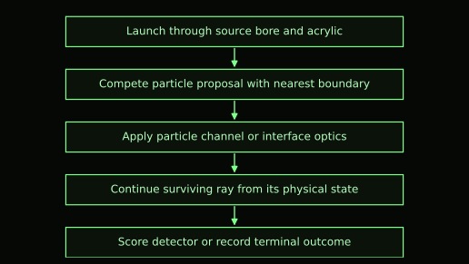

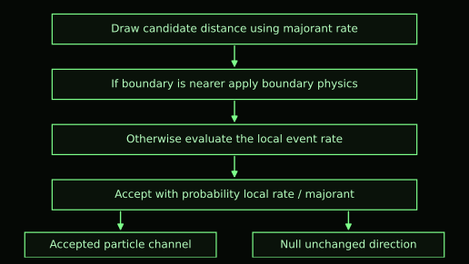

13 Detector scores uncertainty and light diagnostics
Production detector scoring follows the ring apertures in three dimensions. A ray must reach the appropriate entrance and pass the stepped bore geometry. In the active ideal_hard_aperture response model, accepted paths contribute unit hardware scores. The source also contains a fitted angular photodiode response option, but it is not selected here. Neither option automatically supplies a wavelength-dependent absolute responsivity or conversion from ray score to volts.
The symmetry_average_exact setting combines native and mirrored channel scores with a factor of one half. This is a variance-reduction construction for the symmetric apparatus and source prescription. It is not an increase in the number of independently launched rays, and it does not justify doubling the launched denominator. Correlations between mirrored scores matter when estimating uncertainty; batch-based diagnostics and jackknife estimates address the reported normalized response more appropriately than treating every mirrored contribution as independent.
Two common output normalizations answer different questions. A score divided by launched histories estimates acceptance per launch, including source and apparatus losses in that denominator. A channel score divided by the sum of all selected detector scores estimates angular composition conditional on detection. The second removes the total detection fraction and can conceal amplitude differences across concentrations. The article therefore uses angular-shape agreement and per-launch response as separate concepts.
Equation 36 LaTeX source
H_j=\frac{S_j}{N_{\mathrm{launch}}},\qquad P_j=\frac{S_j}{\sum_k S_k}Here S_j is the selected, possibly symmetry-averaged detector score in channel j. The quantities H_j and P_j are dimensionless. Zero total selected score requires explicit handling rather than division by zero. The functions _write_detector_outputs and the forward model’s result aggregation preserve these distinctions in reporting. Batch jackknife uncertainty is attached to normalized angular outputs, which can be correlated because their sum is constrained.
A large number of launched histories does not guarantee a precise rare-angle estimate. Forward transmission can dominate detected totals while high-angle channels have far fewer contributing paths. Sampling precision depends on actual selected scores and their variability. The present configured count of 100 million rays per case is a workload setting, not a measured precision claim or a performance result. No execution time or speedup is inferred from that count.
Spatial light diagnostics record track length traversed through voxels, rather than merely counting sampled ray positions. The current diagnostic grid is 256 × 256 × 384, with all launched histories eligible under the configured maximum. Voxel-boundary traversal deposits the clipped segment length into total and post-particle-event fields. A bounded set of representative trajectories supports visual interpretation, while full accumulation fields describe the selected ensemble.
Track length is an occupancy-like transport measure, not automatically irradiance or detector voltage. The deposited total is clipped to the diagnostic domain and differs from an uncollected full physical path-length total. Display-only percentile scales, logarithmic floors and point-cloud selections alter visualization, not the exported arrays or transport decisions. A bright region in a rendered cloud may reflect accumulated residence and the chosen display scale; it must be interpreted with units and normalization from the diagnostic metadata.
Event grids, deposition totals and counters provide closure checks. Rejected diagnostic events are accounted separately from observed and deposited events, and nonfinite or negative required arrays can suppress derived products. The active report policy can retain limited diagnostic outputs without treating a diagnostic warning as a new scattering law. Failed transport rays remain in launched totals, and valid prefixes of stopped histories can remain in diagnostic accumulation. These limitations are scientifically relevant when using a diagnostic field quantitatively.
14 CUDA implementation and scientific reporting
CLARITAS uses Python and CuPy to configure cases, allocate arrays, compile embedded CUDA source and aggregate outputs [9,10]. The physics that determines ray outcomes is largely device-side. Deterministic CUDA kernels compute Mie coefficients, angular tables, event-rate arrays and sediment fields before the many independent ray histories are launched. Figure 11 shows the division of work without treating the host as a separate physical model.
The optical precompute stages exploit the small number of PSD bins and the many angles per bin. Double precision supports Mie recurrences and cross-section calculations. The transport kernel uses a mixture of precision appropriate to its tasks: vessel-scale state and interface operations commonly use floats, while particle-scale centres and finite-particle intersection calculations use double precision where vessel coordinates could otherwise obscure micron-scale clearance. This is a numerical implementation choice rather than a claim of uniform double precision throughout the ray calculation.
Histories are processed in chunks of 250000 rays under the supplied settings, permitting a much larger configured launch count without retaining every ray’s state simultaneously. Random state is derived from history identifiers and seeds, with separate streams for parts of the sampling architecture. Repeatable seeds support controlled comparisons, but repeatability alone does not establish the statistical independence or physical adequacy of the chosen random generator. Batch summaries and per-case metadata make the stochastic calculation more auditable.
The core physical mapping is concise. transport_precompute_kernel constructs cross sections and event-channel weights. sediment_transport_precompute_kernel prepares the analytic drift quantities, while the meridional kernel family assembles and solves the selected stationary grid. trace_kernel performs ray histories, and hardware_detector_id together with the detector-path helpers evaluates aperture access. The reporting functions _write_sediment_diagnostics, _write_particle_optics and _phase_function_outputs expose physically meaningful derived products rather than changing the simulation tables.
Figure 12 shows supplied axial profiles for loess and kaolin. Their main value is the material contrast under the analytic stationary closure: the loess field has a visible gradient while kaolin is much closer to uniform at the chosen diffusivity. That illustration does not measure the real suspension and does not validate the current meridional field. Current reporting can produce analogous profiles from the numerical grid, retaining the distinction between normalized bin scales and total mass concentration.
The implementation also records integrity metadata and classified failures. These reports establish whether an output was produced under complete or limited diagnostic conditions. They should accompany quantitative use of the arrays, but are not substitutes for experimental uncertainty. Hardware speed depends on GPU model, precision throughput, event distribution, diagnostic volume and branching. The source alone supports the computational architecture, not a universal acceleration factor.
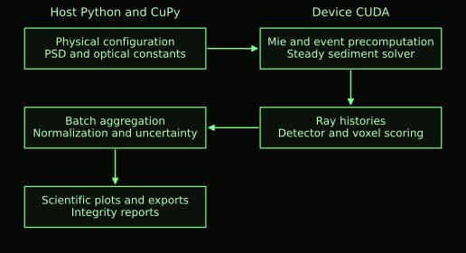

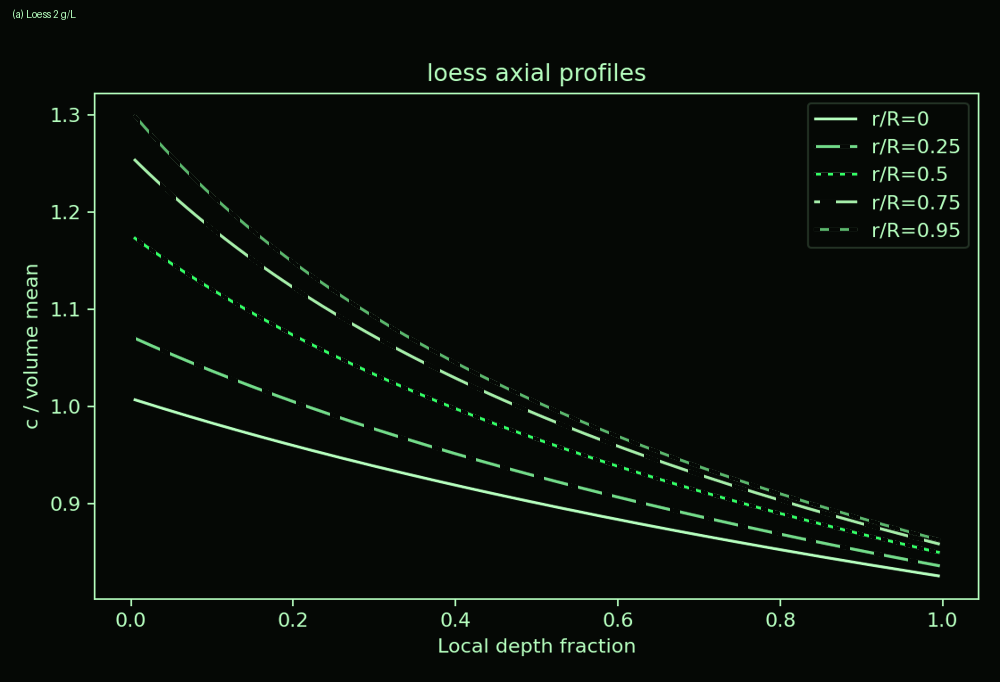
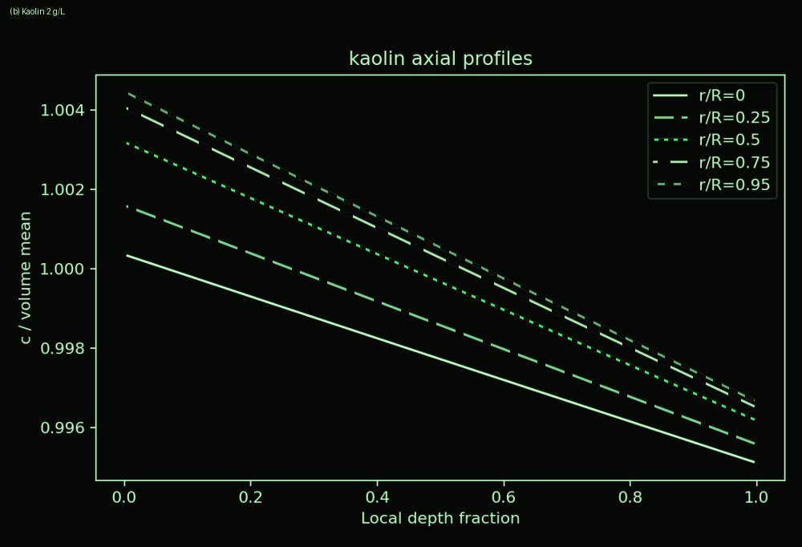


15 Verification and comparison with measurements
Verification asks whether the numerical algorithms implement their stated equations. Conservation checks ask whether inventories and accumulated scores close under their defined domains and denominators. Regression tests ask whether intended geometry and transport behaviour remain stable under code changes. Experimental validation asks whether the physical model predicts observations under known conditions. These forms of evidence complement each other, but none can stand in for all the others.
For particle optics, useful verification includes efficiencies, phase-CDF normalization and comparison with an independent Mie calculation. For sediment, it includes the low-Reynolds-number limit, corrected slip solution, inventory normalization, analytic cases and residuals of the finite-volume equations. For transport, it includes homogeneous distance statistics, accepted rates in heterogeneous test fields, boundary topology and detector scoring. Conservation must be checked with the actual normalization and clipped diagnostic support, rather than an assumed total path length that was not collected.
During preparation of this article, the supplied host validation completed with 17 checks passed, none failed and four CUDA checks skipped. The separate diagnostic-policy tests passed all ten tests. These checks exercise configuration, host reporting, numerical references and mocked case orchestration; they are not GPU production evidence. No current CUDA production sweep was executed for this article. This statement limits the new evidence to what was actually run without turning the methods paper into a software-testing diary.
The supplied experimental examples compare loess and kaolin over nominal concentrations of 0.5, 2 and 4 g L⁻¹ at 622 nm. The 150° and 160° channels were mechanically unreliable and are retained visibly for transparency but excluded from strong quantitative interpretation. The 170° channel remains trusted. This data-quality mask applies to measured channels; the simulated eighteen-channel detector geometry is not deleted or reweighted to conceal disagreement.
Figure 13 reproduces the supplied detector comparison. Each material/concentration case receives its own affine scale and offset for the shape comparison. This permits assessment of whether the angular pattern resembles measured voltage after calibration freedom, but it does not demonstrate an absolute amplitude law shared across concentrations. The source article reports trusted high-angle affine R² values around 0.98 for loess and approximately 0.96–1.00 for kaolin. The underlying raw comparison tables are not bundled here, so these values are reported as supplied results rather than independently recalculated metrics.
An affine fit can obscure amplitude mismatch because both offset and scale are adjusted. A stricter test would use a shared, independently justified material or apparatus calibration across all concentrations and compare per-launch predictions with calibrated optical power or voltage. The supplied account identifies weaker shared high-angle agreement for loess than for kaolin. That observation motivates further examination of suspension state and background paths; it does not uniquely identify one missing optical mechanism.
The current 98 mm bore and nonzero meridional circulation differ from the configuration behind these supplied comparisons. Their evidence supports aspects of the underlying model’s angular behaviour, but cannot be transferred as a validation certificate for the selected current settings. A fresh matched run and a documented correspondence with experimental geometry are needed before assigning the older fit statistics to current predictions. This is a configuration distinction, not a development narrative.
The most useful additional products are current detector responses with uncertainty, a current sensor-plane PSD and optical-coefficient field, and raw measurements with their reference and calibration metadata. Those products would improve quantitative assessment much more than additional schematic figures or a larger catalogue of internal test results.


16 Apparatus background and wavelength interpretation
The measured voltage includes the instrument as well as sediment scattering. Electronic offset can coexist with optical background generated by source leakage, water paths, acrylic reflections and other apparatus contributions. Adding sediment can attenuate or redirect the rays responsible for that optical background. Consequently, subtracting a water-only voltage as a fixed concentration-independent pedestal can produce misleading sediment signals, especially in channels whose sediment-bearing voltage is close to or below the reference.
A useful conceptual decomposition separates electronic offset, an attenuated apparatus/water contribution and a sediment-associated contribution. Let T(theta,C) represent the change in background transmission caused by sediment. The resulting expression is an interpretation of possible measurement behaviour, not an additional fitted production equation in CLARITAS. It does not identify background components uniquely from one water-only measurement.
Equation 37 LaTeX source
V_{\mathrm{meas}}(\theta,C)\approx V_{\mathrm{electronic}}+T(\theta,C)V_{\mathrm{background}}(\theta)+V_{\mathrm{sediment}}(\theta,C)The source article reports a high-angle water-reference voltage comparable to low-concentration sediment values. A negative difference after fixed subtraction need not imply negative scattering: it can arise when sediment suppresses an existing optical path. The correct model comparison should distinguish source power, electronics, optical background and concentration-dependent transport. CLARITAS includes explicit apparatus ray paths, but does not automatically reproduce every uncharacterized component of the historical instrument or calibrate detector voltage.
Wavelength changes have a clear place in the model. Changing lambda_0 changes x for every bin, so the Mie coefficients, efficiencies, phase CDFs and cross sections are recomputed. If nonzero k is supplied, the internal absorption coefficient changes through its 1/lambda_0 dependence. The wave coherence fraction also changes explicitly with wavelength. Thus a multi-wavelength run is more than recolouring the same angular curve.
Other properties remain fixed unless provided independently. The active water and acrylic indices do not contain automatic spectral dispersion, and the size-dependent particle table is not a spectral n/k database. The ideal aperture detector has no spectral responsivity curve. The source angular and spatial assumptions also remain the configured ones. A computed difference between wavelengths therefore represents scattering and absorption under these material and apparatus assumptions, not a complete prediction of measured multi-wavelength voltage.
For a sound wavelength study, the most informative outputs would pair per-bin optical changes with detector response and fixed-configuration metadata. A detector trend alone cannot distinguish an intrinsic scattering effect from a changed source spectrum or detector sensitivity in the experiment. Measured spectral optical constants and responsivity would permit that comparison to be made on a more physical basis. Until then, wavelength sweeps are valuable controlled model studies whose optical assumptions should be stated in their captions.
| Quantity | Automatic change with wavelength | External information needed |
|---|---|---|
| Mie size parameter and efficiencies | Yes | Valid n and k assumptions |
| Per-bin phase CDF and cross sections | Yes | Spectral material constants for realism |
| Internal attenuation for nonzero k | Yes through 1/lambda | Measured spectral k |
| Wave coherence fraction | Yes | Physical surface-height basis |
| Water and acrylic real indices | No | Spectral dispersion |
| Particle n(d) and selected k | No spectral law | Size and wavelength resolved data |
| Detector voltage response | No | Responsivity gain and calibration |
17 Limits and priorities for further work
Equivalent spheres preserve a useful diameter and mass relationship, but natural particles can have angular facets, porosity, plate-like shapes and heterogeneous composition. The rough-interface model adds surface complexity without turning the particle into a fully resolved mineral grain. The direction-only morphology branch is likewise a statistical construction. The present hybrid does not solve Maxwell’s equations for a measured rough nonspherical particle, and matching the Mie proposal rate does not remove this angular-model uncertainty.
Optical constants are another constraint. The real-index profiles are effective hypotheses and the selected zero absorption is an assumption. A good fitted angular shape does not determine the true index or roughness uniquely because apparatus and spatial-state effects can compensate. Independent characterization of mineral optics and roughness would make sensitivity studies more interpretable. Absorbing variants should be checked specifically because the proposal-rate and internal-loss construction differs from a standard extinction-rate transport formulation.
The suspension state is prescribed through dilute, one-way coupling and a constant eddy diffusivity. Neither the vortex nor turbulence is solved from the stirrer or vessel mechanics. The meridional flow is incompressible and boundary-tangent in its continuous construction, but its amplitude and shape require experimental justification. Real sediment may modify the flow, deposit, resuspend or develop azimuthal structures absent from the axisymmetric closure. Strongly concentrated, interacting suspensions are outside the independent-particle assumption.
The source contains population-balance machinery for aggregation and fragmentation, but the selected aggregation model is none and its exposures are zero. The active calculation therefore does not evolve a floc population. It would be inaccurate to claim that no aggregation code exists, or to describe aggregation as an active explanation of the current detector curves. Any activated population model would need its own mass-conservation checks, parameter basis and optical interpretation of the resulting effective particles.
Spatial numerical accuracy requires assessment beyond a solver residual. The finite-volume grid approximates the curved fluid domain, interpolation samples the resulting field, and a density maximum supplies the delta-tracking majorant. Grid refinement and normalization checks can separate numerical effects from changes in D_t or circulation. Monte Carlo uncertainty then adds a second numerical layer, particularly for rare accepted detector paths. Both layers should accompany quantitative sensitivity or inverse-model work.
Experimental scope remains apparatus specific. The supplied comparisons are informative for angular shape, but source calibration, detector mounting, reference behaviour and local suspension state constrain stronger conclusions. A new experiment should prioritize stable high-angle apertures, source-power monitoring, matched water and dark references, measured PSDs and repeatable mixing. Direct measurements of local concentration or velocity would test the stationary closure instead of leaving optical data to identify both particle and fluid uncertainties at once.
Future development can follow these identifiable limits. Spectral n/k measurements and calibrated responsivity would improve wavelength prediction. Grid-converged stationary fields with independently constrained flow would strengthen the current framework before adding transient transport. Transient sediment evolution, CFD coupling, nonspherical electromagnetic optics and measured aggregation kinetics are proposed extensions, not current production capabilities. Uncertainty propagation should treat material, flow and apparatus parameters together, because all three influence the same detector outputs.
18 Conclusions
CLARITAS combines PSD-resolved particle optics with finite-particle rough-interface interactions, explicit sample-cell boundaries and a stationary spatial sediment field. The selected hybrid constrains the total proposal rate using Mie scattering while retaining geometric and wave channels with distinct angular constructions. Coherent Mie events use the CDF for a selected size bin; reporting averages do not replace these production distributions.
The current suspension model includes settling, finite-Reynolds-number centrifugal slip, effective diffusion and prescribed meridional circulation under a curved Scully free surface. Each size bin preserves its inventory, allowing local PSD and optical coefficients to differ from nominal bulk values. CUDA preprocessing and independent ray histories make these coupled calculations practicable without replacing the suspension by one empirical scattering multiplier.
The useful outputs connect detector shape to the physical history: local size segregation, optical hazards, particle mechanisms, apparatus paths and interaction order. Supplied experimental examples support trusted-channel angular behaviour under their stated comparison configuration, while absolute calibration and the current circulation field remain incompletely constrained. The model is therefore best used as an explicit, inspectable forward framework for testing how sediment population, spatial state and apparatus geometry jointly determine optical response.
References
[1] Bohren C F and Huffman D R. Absorption and Scattering of Light by Small Particles. Wiley VCH, 1998. doi:10.1002/9783527618156. Authoritative treatment of Lorenz–Mie coefficients, efficiencies and angular scattering.
[2] Born M and Wolf E. Principles of Optics, seventh expanded edition. Cambridge University Press, 1999. doi:10.1017/CBO9781139644181. Electromagnetic and geometrical interface optics, including Fresnel relations.
[3] Schiller L and Naumann A. Über die grundlegenden Berechnungen bei der Schwerkraftaufbereitung. Zeitschrift des Vereines Deutscher Ingenieure 77, 318–320, 1933. Finite Reynolds number drag correlation; the implemented equation is stated explicitly in this article.
[4] Scully M P. Computation of Helicopter Rotor Wake Geometry and Its Influence on Rotor Harmonic Airloads. PhD thesis, Massachusetts Institute of Technology, 1975. MIT repository: https://hdl.handle.net/1721.1/64826. Origin of the regularized vortex profile used as a prescribed closure.
[5] Beckmann P and Spizzichino A. The Scattering of Electromagnetic Waves from Rough Surfaces. Pergamon Press, 1963. Gaussian slope basis for the Beckmann rough-surface distribution; see also the accessible formulation in reference 8.
[6] Smith B G. Geometrical shadowing of a random rough surface. IEEE Transactions on Antennas and Propagation 15, 668–671, 1967. doi:10.1109/TAP.1967.1138991.
[7] Heitz E, Hanika J, d’Eon E and Dachsbacher C. Multiple-scattering microfacet BSDFs with the Smith model. ACM Transactions on Graphics 35, article 58, 2016. doi:10.1145/2897824.2925943. Author research page: https://eheitzresearch.wordpress.com/240-2/.
[8] Pharr M, Jakob W and Humphreys G. Physically Based Rendering From Theory to Implementation, fourth edition. MIT Press, 2023. https://www.pbr-book.org/4ed/. Chapters on volume scattering and microfacet theory provide explicit modern treatments of Monte Carlo transport, null collisions, Beckmann distributions and Smith visibility. The Woodcock construction originates in Woodcock E R, Murphy T, Hemmings P J and Longworth S C, Techniques used in the GEM code for Monte Carlo neutronics calculations in reactors and other systems of complex geometry, ANL 7050, 557–579, 1965; the modern formulation is used here as the accessible methodological reference.
[9] NVIDIA. CUDA Programming Guide. https://docs.nvidia.com/cuda/cuda-programming-guide/index.html. Official documentation of device execution and the CUDA programming model. Accessed 10 October 2026.
[10] CuPy Developers. cupy.RawModule documentation. https://docs.cupy.dev/en/stable/reference/generated/cupy.RawModule.html. Official documentation of compilation and access to embedded CUDA kernels. Accessed 10 October 2026.
[11] Pope S B. Turbulent Flows. Cambridge University Press, 2000. doi:10.1017/CBO9780511840531. Physical basis and limitations of effective turbulent transport closures.
[12] Patankar S V. Numerical Heat Transfer and Fluid Flow. Hemisphere Publishing, 1980. Finite-volume conservation and discretization of convection–diffusion equations. The CLARITAS stationary solver is described directly in Section 10 rather than claimed to reproduce a complete textbook solver.